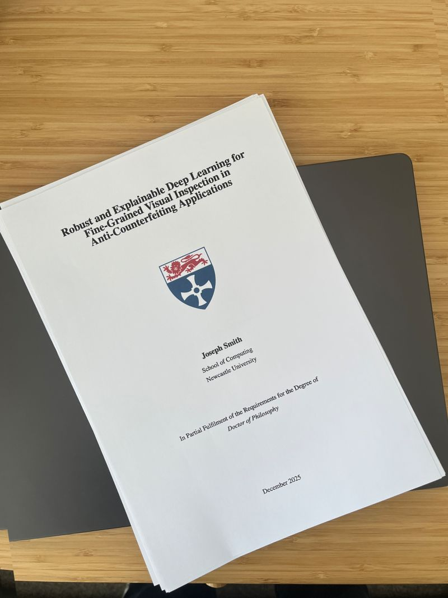

Passing My PhD Viva and What Comes Next

A Milestone I Have Been Working Toward for Years
On March 13, 2026, I passed my PhD viva, with minor corrections, at Newcastle University. That sentence is short, but it closes a chapter that has shaped how I think about research, engineering, and the gap between strong benchmark results and systems that actually hold up in the real world.
My thesis is titled Robust and Explainable Deep Learning for Fine-Grained Visual Inspection in Anti-Counterfeiting Applications. It was carried out in collaboration with Procter & Gamble and focused on a practical problem: how to build computer vision systems that can distinguish genuine and counterfeit consumer goods products while remaining useful when data quality shifts, domains drift, and deployment conditions stop looking like the training set.
What the Thesis Actually Tried to Solve
A lot of vision work looks strong in controlled experiments, then becomes much less convincing once images are noisy, lighting changes, capture devices differ, or product appearance evolves. My PhD was motivated by that gap.
I wanted to understand how to make fine-grained visual inspection systems more dependable, especially in high-variance settings where subtle class differences matter and real operational data is messy. That meant looking beyond raw accuracy and spending more time on robustness, explainability, and deployment-aware evaluation.
The Three Contributions I Care About Most
The first contribution was building a system for classifying genuine and counterfeit consumer goods products. This gave the work a concrete industrial target instead of staying at the level of abstract benchmark improvement.
The second was investigating robustness to real-world problems such as distribution shift and image quality variation. I looked at what happens when capture conditions change over time, when image quality drops, and when models need to adapt without quietly losing competence on earlier data.
The third was exploring how Fourier frequency methods can be combined with deep learning to produce an effective classification system. That line of work was useful because it forced me to think carefully about what signal a model is really using and how to make those signals more resilient.
What I Learned From Doing This Work
The strongest research results I obtained were usually not from a single clever trick. They came from combining careful dataset construction, realistic evaluation, explainability analysis, and adaptation strategies that respected how systems change over time.
That has left me with a fairly clear view of the kind of work I want to keep doing: research that is technically serious, but also grounded in deployment constraints. I am most interested in Research Scientist roles where the goal is to build robust vision or multimodal systems that can move from promising prototypes into reliable products.
What Comes Next
In the short term, I am finishing my minor corrections. In parallel, I am looking for Research Scientist opportunities where I can keep working on robust computer vision, model adaptation, explainability, and practical ML systems.
Passing the viva feels less like an endpoint than a useful checkpoint. It confirms the direction of the work, but it also sharpens what I want to do next: push on the hard part of applied AI, where models need to be interpretable, durable, and effective outside the lab.
Related Work
- Smith, J., Zuo, Z., Stonehouse, J., Obara, B. (2025). Mobile phone image-based framework for anti-copy pattern detection and classification. Array.
- Zuo, Z., Smith, J., Stonehouse, J., Obara, B. (2024). Robust and Explainable Fine-Grained Visual Classification with Transfer Learning: A Dual-Carriageway Framework. CVPR Workshops. arXiv.
- Zuo, Z., Smith, J., Stonehouse, J., Obara, B. (2024). An Augmentation-based Model Re-adaptation Framework for Robust Image Segmentation. ECCV Workshops.
Related Posts

Image Quality Filtering for Fine-Grained Classification
This post goes deeper into one of the recurring themes of the thesis: why image quality variation has an outsized effect on fine-grained computer vision systems.

Model Re-Adaptation Under Domain Shift
This post covers the adaptation side of the thesis and the practical decisions involved in updating models without losing historical competence.